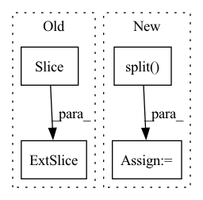

Pattern ID :10576

Before Change
img_data = torch.flip(img_data, dims=[1])
actions = torch.flip(actions, dims=[1])
input_frames = img_data if self.NEEDS_COMPLETE_INPUT else img_data[:, :config["context_frames"]]
target_frames = img_data[:, config["context_frames"]: config["context_frames"] + config["pred_frames"]]
return input_frames, target_frames, actions
def pred_1(self, x: torch.Tensor, **kwargs):
After Change
input_frames = img_data[:, :T_in+T_pred]
target_frames = input_frames[:, T_in:].clone()
else:
input_frames, target_frames = torch.split(img_data[:, :T_in+T_pred], [T_in, T_pred], dim=1)
return input_frames, target_frames, actions
def pred_1(self, x: torch.Tensor, **kwargs):
r
In pattern: SUPERPATTERN
Frequency: 3
Non-data size: 4
Instances
Fragment ID: 36841106
Project Name: ais-bonn/vp-suite
Commit Name: 9c2db5cd3e31fa835977445b4eee67b5737b91b7
Time: 2022-02-18
Author: boltres@ais.uni-bonn.de
File Name: vp_suite/base/base_model.py
M Class Name: VideoPredictionModel
N Class Name: VideoPredictionModel
M Method Name: unpack_data(4)
N Method Name: unpack_data(4)
M Parent Class: nn.Module
N Parent Class: nn.Module
M File Name: vp_suite/base/base_model.py
N File Name: vp_suite/base/base_model.py
M Start Line: 100
M End Line: 106
N Start Line: 100
N End Line: 111
'>
Before Change
start = piece_length * (i - 1)
end = piece_length * i
piece = spec[:, start:end]
if i == num:
piece = spec[:, start:]
After Change
time_mask(spec)
return spec
else:
chunks = torch.split(spec, chunk_size, dim=1)
to_be_masked = torch.stack(list(chunks[:-1]), dim=0).unsqueeze(1)
time_mask(to_be_masked)
freq_mask(to_be_masked)
masked = to_be_masked.squeeze(1).permute(1, 0, 2).reshape((spec.shape[0], -1))
'>
Fragment ID: 36841104
Project Name: ivankunyankin/quartznet-asr
Commit Name: 28f999e7cfbefb66c9545f32e76a7454a7432aac
Time: 2021-07-01
Author: IKunyankin@gmail.com
File Name: utils.py
M Class Name: AnonimousClass
N Class Name: AnonimousClass
M Method Name: augment(4)
N Method Name: augment(4)
M Parent Class:
N Parent Class:
M File Name: utils.py
N File Name: utils.py
M Start Line: 57
M End Line: 82
N Start Line: 57
N End Line: 74
'>
Before Change
// making unit vectors
alpha = alpha / (np.sum(np.abs(alpha) ** 2, axis=0) ** (1. / 2))
alpha1 = alpha[:N, :]
alpha2 = alpha[N:, :]
self.U = np.dot(self.K1, alpha1).T
self.V = np.dot(self.K2, alpha2).T
self.alpha1 = alpha1
After Change
alpha = alphas[:, :latent_dims]
// making unit vectors
alpha = alpha / (np.sum(np.abs(alpha) ** 2, axis=0) ** (1. / 2))
self.alphas = np.split(alpha, len(views))
self.score_list = [kernel @ alpha for kernel, alpha in zip(self.kernels, self.alphas)]
def make_kernel(self, X: np.array, Y: np.array):
'>
Fragment ID: 36841095
Project Name: jameschapman19/cca_zoo
Commit Name: 3568a60044e8204b858edd2876134393841b1980
Time: 2021-02-09
Author: james.chapman.19@ucl.ac.uk
File Name: cca_zoo/kcca.py
M Class Name: KCCA
N Class Name: KCCA
M Method Name: __init__(1)
N Method Name: __init__(8)
M Parent Class:
N Parent Class:
M File Name: cca_zoo/kcca.py
N File Name: cca_zoo/kcca.py
M Start Line: 34
M End Line: 74
N Start Line: 50
N End Line: 70